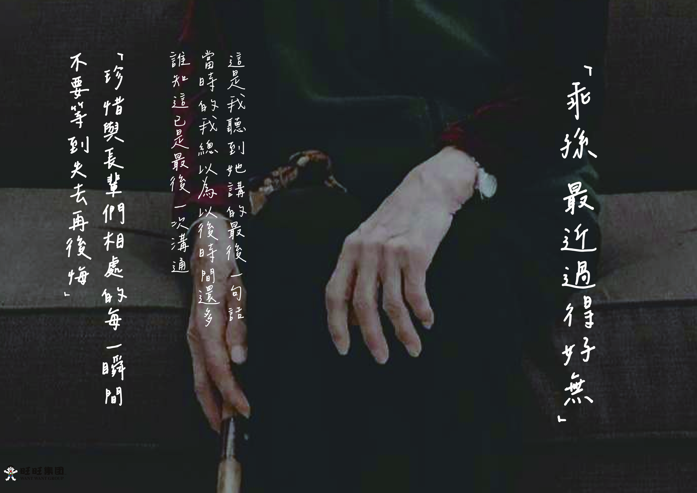
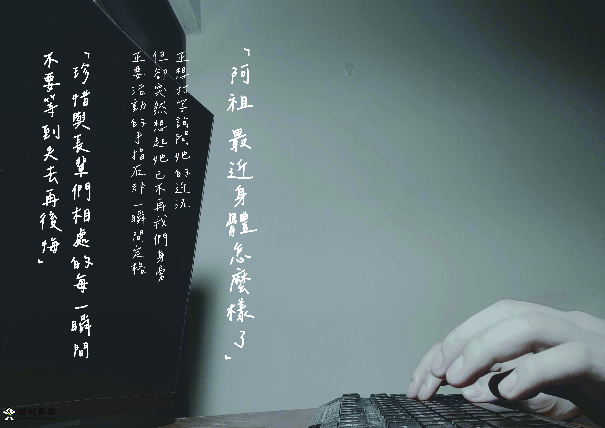
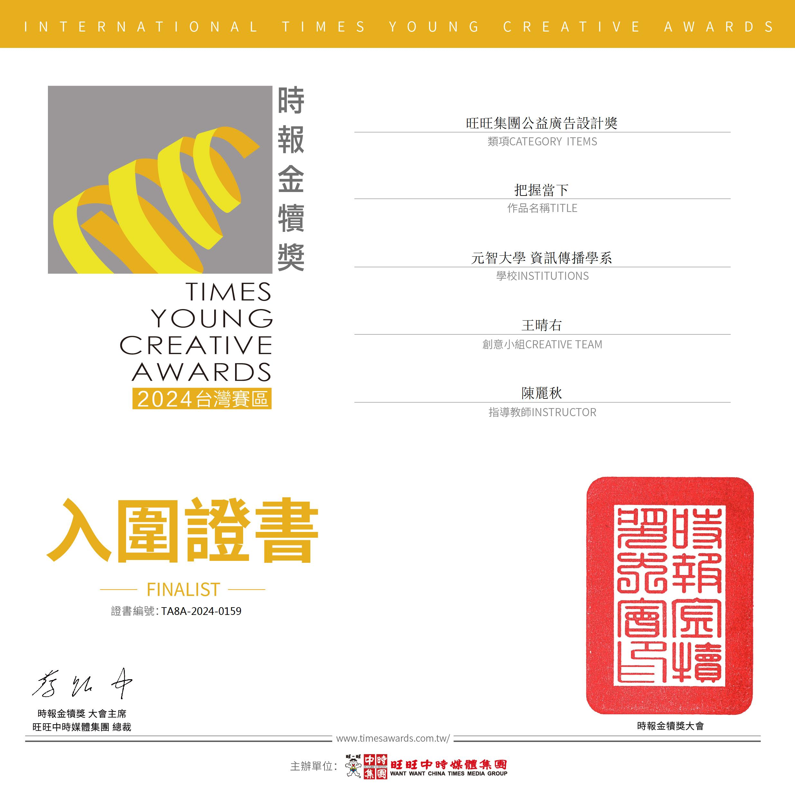

把握當下 金犢獎公益廣告設計
本作品以家人之間未及時關心的遺憾為題，提醒我們：別把全部心力都放在眼前的工作與忙碌中。 那些沒能說出口的話、沒能主動問候的瞬間，可能就是最後的機會。透過影像與手寫文字，引導觀者重新思考關心與陪伴的優先順序。

設計理念
用兩雙手、一段對話，道出常見的遺憾。提醒自己，把握每次可以問候的當下。
作品以對話的形式串聯兩代視角：一方是長輩的關心，一方是後輩專注於螢幕前的沉默。 透過手部特寫與留白畫面，象徵生活中那些我們視而不見的連結與等待。 我希望提醒觀者，別等到來不及才後悔，要從現在開始，把心從螢幕抽出一點，放回身邊真正重要的人身上。
整體展示
